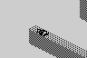
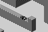
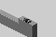
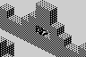
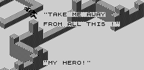
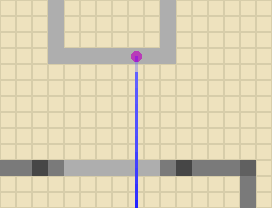
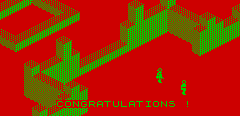
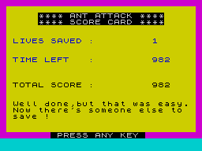
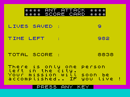
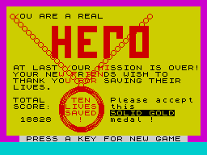

| Ant Attack | Finding and rescuing |
Each level someone is waiting in the city, and the level is won by finding them and bringing them out. This page follows that through the code: where they wait, how they are found, how they follow, what counts as out, and what the clock, the energy and the score make of it. The worked example is a real game -- level 1 played from its first frame by a scripted player who presses the keys, in the simulator, and on into BASIC's score card.
The places are BASIC's: the DATA on the line after each level's story card (1001 to 1091). Line 800 reads them into the rescued person's record, x, y and height, at $B490. Level 1 has one place; every later level has four, and line 850 picks one by the clock: r is the time left when the last person was brought out, MOD 4, and line 860 skips that many places. A failed attempt does not change r, so the place stays the same until the next rescue. Each place, drawn by the game's own DRAW_VIEW with the person lying there as BASIC leaves them (see the levels for the story cards):
| Level | Time MOD 4 = 0 | 1 | 2 | 3 |
|---|---|---|---|---|
| 1 | $B6, $F3, 1 | |||
| 2 | $C8, $D5, 3 | $C6, $EA, 1 | $D4, $C3, 1 | $8D, $E3, 1 |
| 3 | $F0, $DF, 5 | $C0, $BC, 5 | $B8, $9D, 2 | $B5, $AE, 6 |
| 4 | $CF, $FA, 3 | $F1, $F3, 6 | $BE, $FE, 1 | $9A, $E8, 2 |
| 5 | $F1, $B7, 1 |  $E0, $9E, 2 | $95, $B0, 1 |  $87, $AF, 2 |
| 6 | $D1, $87, 1 | $B9, $8D, 1 | $84, $8C, 3 | $C8, $9B, 2 |
| 7 | $F5, $9F, 6 | $91, $B0, 6 | $C7, $AD, 3 | $CE, $8C, 4 |
| 8 |  $8C, $96, 3 | $DD, $89, 5 | $B8, $93, 3 |  $FF, $9F, 2 |
| 9 | $93, $F5, 4 | $9A, $E8, 6 | $DB, $91, 6 | $B2, $86, 4 |
| 10 | $88, $DB, 3 | $F0, $8A, 5 | $E3, $E1, 3 | $A3, $C5, 6 |
While waiting, the person is never moved: MOVE_RESCUEE only measures the distance to the player. So they do not fall, cannot be bitten, and lie still -- BASIC starts them with the lying-down picture and a stun of four frames, which nothing counts down until they are found.
Every frame, MOVE_RESCUEE takes the player's distance (DISTANCE, along the grid) and compares it with last frame's, kept at +$0E; SCANNER colours the SCAN box on the panel green if it is smaller and red if not. That is the only guidance the game gives. When the distance is under four and the two are at the same height, they are found: +$0D becomes 1, “MY HERO!” plays (script 12), and from the next frame they follow. The height must match exactly -- standing below them on the ground a cell away does not count.
In the run, the girl waits at $B6, $F3, 1, on top of a wall one block high a little way inside the gate. The player walked in along the outside of the city wall, over its low stretch, up to the foot of her wall, and jumped. The last frames before the find:
| Frame | The player | Distance | Scanner | |
|---|---|---|---|---|
| 16 | $B6, $FA, 1 | 7 | green | |
| 17 | $B6, $F9, 1 | 6 | green | |
| 18 | $B6, $F8, 1 | 5 | green | |
| 19 | $B6, $F8, 0 | 5 | red | |
| 20 | $B6, $F8, 0 | 5 | red | |
| 21 | $B6, $F8, 0 | 5 | red | |
| 22 | $B6, $F8, 0 | 5 | red | |
| 23 | $B6, $F7, 0 | 4 | green | |
| 24 | $B6, $F6, 0 | 3 | green | |
| 25 | $B6, $F5, 0 | 2 | green | |
| 26 | $B6, $F4, 0 | 1 | green | |
| 27 | $B6, $F4, 1 | 1 | red | found |

Frame 27, as “MY HERO!” finished: the message is printed over the play area, and the next frame's picture covers it.
Once found, the person runs the same routines as everything else, every frame: SHARE_CELL, then FOLLOW_PLAYER to choose, MOVE_OR_RESPAWN to move and CHOOSE_FRAME for the picture. FOLLOW_PLAYER sets the walk bit while they are two to five cells from the player and clears it at one cell (beside him) or six or more (left behind: they stop and wait to be fetched). They keep their facing if one more step along it would end beside the player, and otherwise turn towards him (DIRECTION_TO). They have bit 4, so they step up a single block by themselves, but they cannot jump: a wall two blocks high stops them. In the player's own cell, ON_TOP decides: on top of him they walk on, under him they stop. Walking is at the player's speed, a cell a frame (see how people move).
Leading her out of the run, frame by frame:
| Frame | The player | The girl | Distance | She is |
|---|---|---|---|---|
| 28 | $B6, $F4, 1 | $B6, $F3, 1 | 1 | standing |
| 29 | $B6, $F4, 0 | $B6, $F3, 1 | 1 | standing |
| 30 | $B6, $F4, 0 | $B6, $F3, 1 | 1 | standing |
| 31 | $B6, $F4, 0 | $B6, $F3, 1 | 1 | standing |
| 32 | $B6, $F4, 0 | $B6, $F3, 1 | 1 | standing |
| 33 | $B6, $F5, 0 | $B6, $F4, 1 | 1 | walking |
| 34 | $B6, $F6, 0 | $B6, $F5, 1 | 1 | walking |
| 35 | $B6, $F7, 0 | $B6, $F5, 0 | 2 | walking |
| 36 | $B6, $F8, 0 | $B6, $F5, 0 | 3 | walking |
| 37 | $B6, $F9, 0 | $B6, $F5, 0 | 4 | walking |
| 38 | $B6, $F9, 0 | $B6, $F5, 0 | 4 | walking |
| 39 | $B6, $F9, 0 | $B6, $F6, 0 | 3 | walking |
| 40 | $B6, $F9, 1 | $B6, $F7, 0 | 2 | walking |
| 41 | $B6, $FA, 1 | $B6, $F8, 0 | 2 | walking |
| 42 | $B6, $FB, 1 | $B6, $F9, 0 | 2 | walking |
| 43 | $B6, $FC, 1 | $B6, $F9, 1 | 3 | walking |
| 44 | $B6, $FC, 0 | $B6, $FA, 1 | 2 | walking |
| 45 | $B6, $FC, 0 | $B6, $FB, 1 | 1 | walking |
| 46 | $B6, $FC, 0 | $B6, $FB, 1 | 1 | standing |
| 47 | $B6, $FC, 0 | $B6, $FB, 0 | 1 | standing |
| 48 | $B6, $FD, 0 | $B6, $FB, 0 | 2 | walking |
| 49 | $B6, $FE, 0 | $B6, $FB, 0 | 3 | walking |
| 50 | $B6, $FF, 0 | $B6, $FB, 0 | 4 | walking |
| 51 | $B6, $FF, 0 | $B6, $FC, 0 | 3 | walking |
| 52 | $B6, $00, 0 | $B6, $FD, 0 | 3 | walking |
| 53 | $B6, $01, 0 | $B6, $FE, 0 | 3 | walking |
| 54 | $B6, $02, 0 | $B6, $FF, 0 | 3 | walking |
| 55 | $B6, $03, 0 | $B6, $00, 0 | 3 | walking |
Every third frame of leading her out, from the find to the gate.

The run from above, x across and y down: the player's path darkening as it goes, the girl's fainter; she waited at the purple dot.
CHECK_RESCUED runs after every frame. The city is x and y from $80 to $FF; the player is outside if x or y has bit 7 clear, and the same for the person following. When both are outside -- anywhere outside, and together or not -- +$0D becomes 2 (BASIC's w), “CONGRATULATIONS !” plays (script 13), and $B438 is set to 1, so PLAY goes back to BASIC after this frame. Coordinates wrap, so the gate side of the city, at y $FF, is next to y $00, already outside. The person has to be two cells behind the player to be walking, so the player has to go a couple of cells further out than they do.
In the run the rescue came on frame 55:

As “CONGRATULATIONS !” finished.
The time is set to 1001 when a level starts (line 750) and COUNT_DOWN_TIME takes one off every third frame, so a level has 3003 frames: about eight minutes at the six or seven frames a second the drawing allows (see how a scene is drawn). In the run it went from 1000 to 982 in 55 frames (18 ticks). CHECK_GAME_OVER stops play when the time or either energy reaches 0. Energy is 20 each, a bite costs one and a grenade all of it (see the ants and the grenade). Running out of energy only ends the attempt: BASIC says “Have another go!”, resets the records, the energies and the grenades, and starts the same level again -- but not the time, which carries on from where it was. Running out of time ends the game (line 60): “TOO BAD SLOWCOACH ! YOU RAN OUT OF TIME !”, the score, and back to the title.
After a rescue BASIC's line 90 adds one to sg, the people saved, and adds the time left times sg to the score se: the second rescue is worth twice its time, the tenth ten times. So speed pays more and more. Then line 20 starts the next level: the clock back to 1001, the next place chosen (above), and the score card. From the run, BASIC's variables at the score card: sg 1, tim 982, se 982 (= 982 × 1), and r 2 (= 982 MOD 4), so level 2 has the person at $D4, $C3, 1, its place 3 of four.

The score card BASIC showed after the run.
Line 90 also makes the ants faster from the fourth rescue on (see the ants).
When sg reaches fin, which line 10 sets to 10, line 95 runs the ending instead of another level: line 3600 clears the screen and calls FINAL_SCRIPT (USR 36594), which plays script 17, then BASIC draws its medal with CIRCLE and prints the total, waits, and asks for a key for a new game. The ten places are all the game has.
To see it without playing ten levels, the run above was repeated with one change: as PLAY handed back to BASIC after the level-1 rescue, sg was set to 8, so that line 90 counted the rescue as the ninth. BASIC then set up level 10 by itself -- its story card, its place, chosen by the time left as always, $E3, $E1, 3 -- and showed the score card for nine; level 10 was started with the keys, and only its rescue was staged, by putting the player beside the person waiting and then both outside the walls. BASIC counted the tenth rescue and ran the ending. No BASIC error occurred on the way. The score is the level-1 rescue's time times nine, plus the staged rescue's times ten.

The score card after the “ninth” rescue.

The ending, as BASIC leaves it waiting for a key.
A word of warning for anyone staging it differently: the game's BASIC fills memory almost to the machine stack, and the medal's CIRCLEs need what little is left. With fin set to 1 instead, so that the level-1 rescue itself is the last, the story card string c$ still holds level 1's text, the longest, and line 3610 ran out of memory in the simulator while this page was being written -- which INTERRUPT answers by restarting the game. The real tenth rescue has level 10's shorter text there, and as above it gets through.